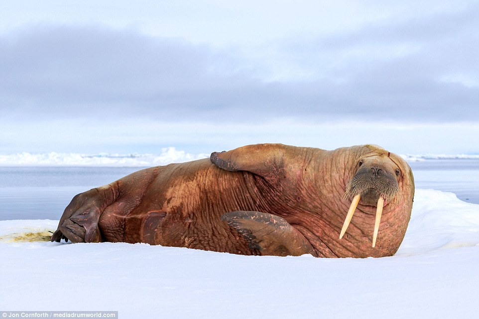
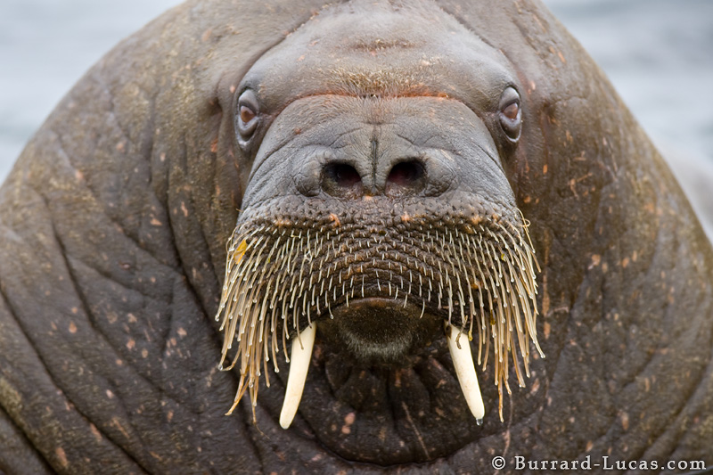

Hide First Walrus Click here
Hide Second Walrus Click here
Click here to learn about the Walrus
Hide Content
The walrus (Odobenus rosmarus) is a large flippered marine mammal with a discontinuous distribution about the North Pole in the Arctic Ocean and subarctic seas of the Northern Hemisphere. The walrus is the only living species in the family Odobenidae and genus Odobenus. This species is subdivided into three subspecies:[1] the Atlantic walrus (O. r. rosmarus) which lives in the Atlantic Ocean, the Pacific walrus (O. r. divergens) which lives in the Pacific Ocean, and O. r. laptevi, which lives in the Laptev Sea of the Arctic Ocean.